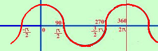

|
sviluppo y = cosx  La funzione nell'origine vale 1 e' una funzione limitata: tutti i valori della funzione sono compresi nella striscia orizzontale di piano compresa tra -1 ed 1 La funzione e' periodica di periodo 2π cioe' dopo un intervallo lungo 2π si ripete |